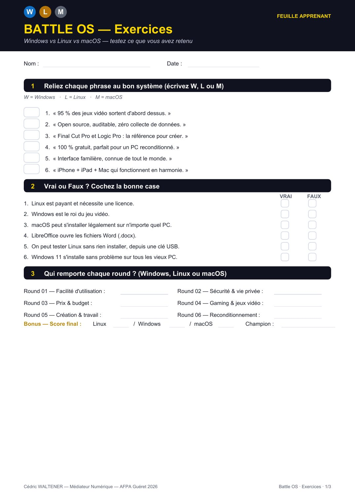
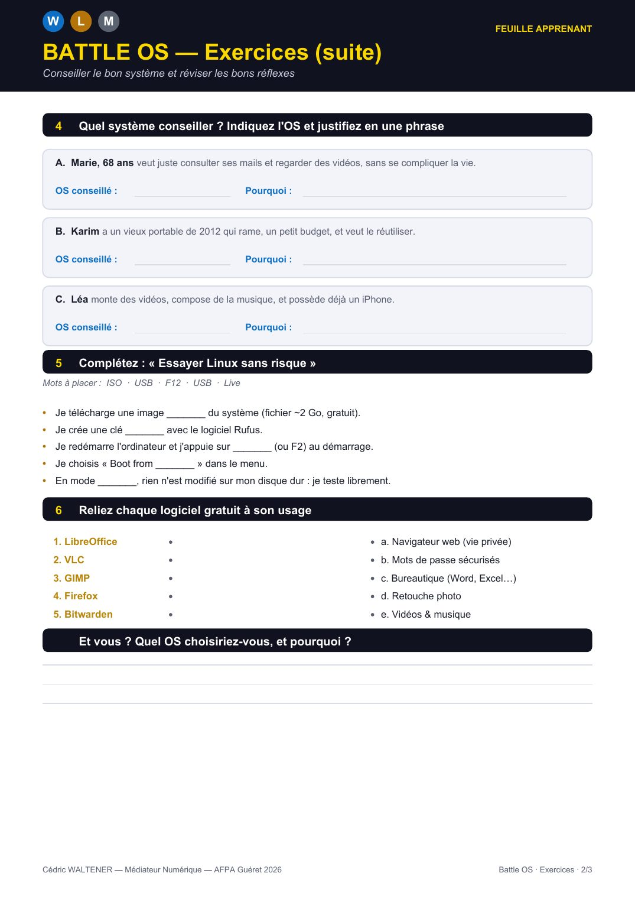
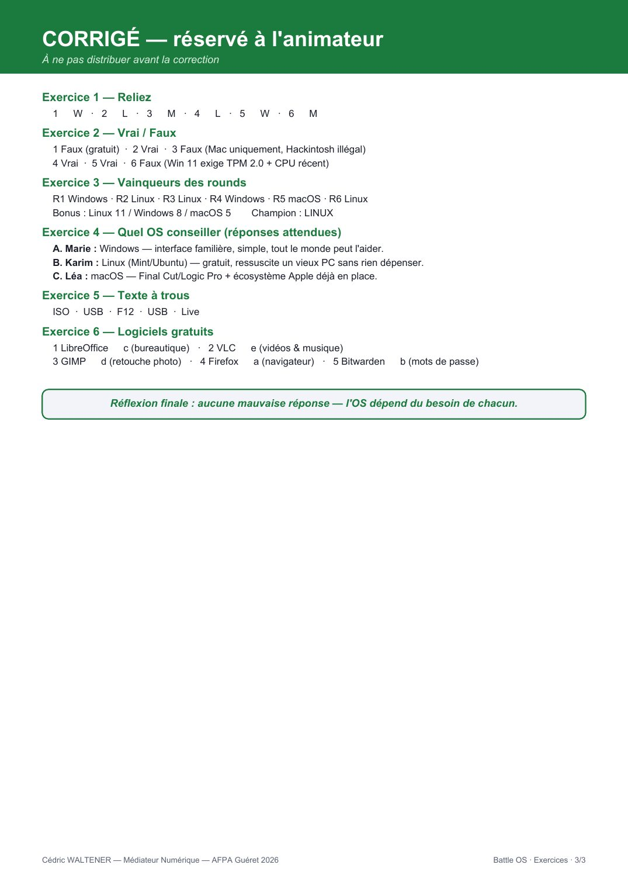

⏳ Vérification de votre niveau…



📄 Texte de la page (traduisible — les images ci-dessus restent en français)
W L M FEUILLE APPRENANT
BATTLE OS — Exercices Windows vs Linux vs macOS — testez ce que vous avez retenu
Nom : Date :
1 Reliez chaque phrase au bon système (écrivez W, L ou M) W = Windows · L = Linux · M = macOS
1. « 95 % des jeux vidéo sortent d'abord dessus. »
2. « Open source, auditable, zéro collecte de données. »
3. « Final Cut Pro et Logic Pro : la référence pour créer. »
4. « 100 % gratuit, parfait pour un PC reconditionné. »
5. « Interface familière, connue de tout le monde. »
6. « iPhone + iPad + Mac qui fonctionnent en harmonie. »
2 Vrai ou Faux ? Cochez la bonne case VRAI FAUX 1. Linux est payant et nécessite une licence. 2. Windows est le roi du jeu vidéo. 3. macOS peut s'installer légalement sur n'importe quel PC. 4. LibreOffice ouvre les fichiers Word (.docx). 5. On peut tester Linux sans rien installer, depuis une clé USB. 6. Windows 11 s'installe sans problème sur tous les vieux PC.
3 Qui remporte chaque round ? (Windows, Linux ou macOS)
Round 01 — Facilité d'utilisation : Round 02 — Sécurité & vie privée :
Round 03 — Prix & budget : Round 04 — Gaming & jeux vidéo :
Round 05 — Création & travail : Round 06 — Reconditionnement : Bonus — Score final : Linux / Windows / macOS → Champion :
Cédric WALTENER — Médiateur Numérique — AFPA Guéret 2026 Battle OS · Exercices · 1/3
W L M FEUILLE APPRENANT
BATTLE OS — Exercices (suite) Conseiller le bon système et réviser les bons réflexes
4 Quel système conseiller ? Indiquez l'OS et justifiez en une phrase
A. Marie, 68 ans veut juste consulter ses mails et regarder des vidéos, sans se compliquer la vie.
OS conseillé : Pourquoi :
B. Karim a un vieux portable de 2012 qui rame, un petit budget, et veut le réutiliser.
OS conseillé : Pourquoi :
C. Léa monte des vidéos, compose de la musique, et possède déjà un iPhone.
OS conseillé : Pourquoi :
5 Complétez : « Essayer Linux sans risque » Mots à placer : ISO · USB · F12 · USB · Live
• Je télécharge une image _______ du système (fichier ~2 Go, gratuit). • Je crée une clé _______ avec le logiciel Rufus. • Je redémarre l'ordinateur et j'appuie sur _______ (ou F2) au démarrage. • Je choisis « Boot from _______ » dans le menu. • En mode _______, rien n'est modifié sur mon disque dur : je teste librement.
6 Reliez chaque logiciel gratuit à son usage
1. LibreOffice a. Navigateur web (vie privée) 2. VLC b. Mots de passe sécurisés 3. GIMP c. Bureautique (Word, Excel…) 4. Firefox d. Retouche photo 5. Bitwarden e. Vidéos & musique
★ Et vous ? Quel OS choisiriez-vous, et pourquoi ?
Cédric WALTENER — Médiateur Numérique — AFPA Guéret 2026 Battle OS · Exercices · 2/3
CORRIGÉ — réservé à l'animateur À ne pas distribuer avant la correction
Exercice 1 — Reliez 1→W · 2→L · 3→M · 4→L · 5→W · 6→M
Exercice 2 — Vrai / Faux 1 Faux (gratuit) · 2 Vrai · 3 Faux (Mac uniquement, Hackintosh illégal) 4 Vrai · 5 Vrai · 6 Faux (Win 11 exige TPM 2.0 + CPU récent)
Exercice 3 — Vainqueurs des rounds R1 Windows · R2 Linux · R3 Linux · R4 Windows · R5 macOS · R6 Linux Bonus : Linux 11 / Windows 8 / macOS 5 → Champion : LINUX
Exercice 4 — Quel OS conseiller (réponses attendues) A. Marie : Windows — interface familière, simple, tout le monde peut l'aider. B. Karim : Linux (Mint/Ubuntu) — gratuit, ressuscite un vieux PC sans rien dépenser. C. Léa : macOS — Final Cut/Logic Pro + écosystème Apple déjà en place.
Exercice 5 — Texte à trous ISO · USB · F12 · USB · Live
Exercice 6 — Logiciels gratuits 1 LibreOffice → c (bureautique) · 2 VLC → e (vidéos & musique) 3 GIMP → d (retouche photo) · 4 Firefox → a (navigateur) · 5 Bitwarden → b (mots de passe)
Réflexion finale : aucune mauvaise réponse — l'OS dépend du besoin de chacun.
Cédric WALTENER — Médiateur Numérique — AFPA Guéret 2026 Battle OS · Exercices · 3/3